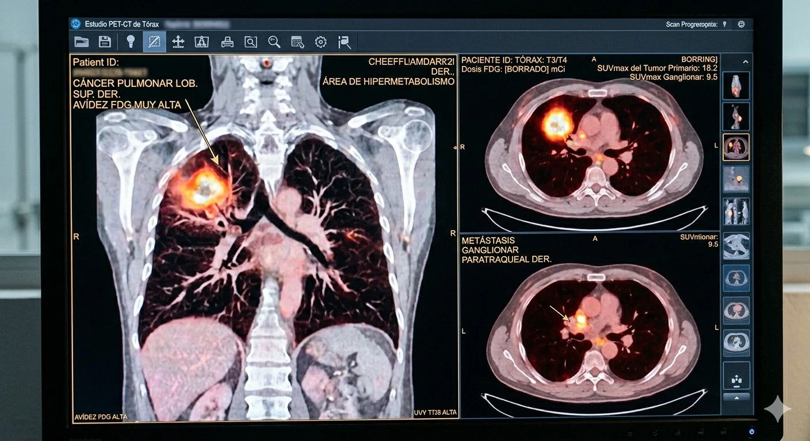
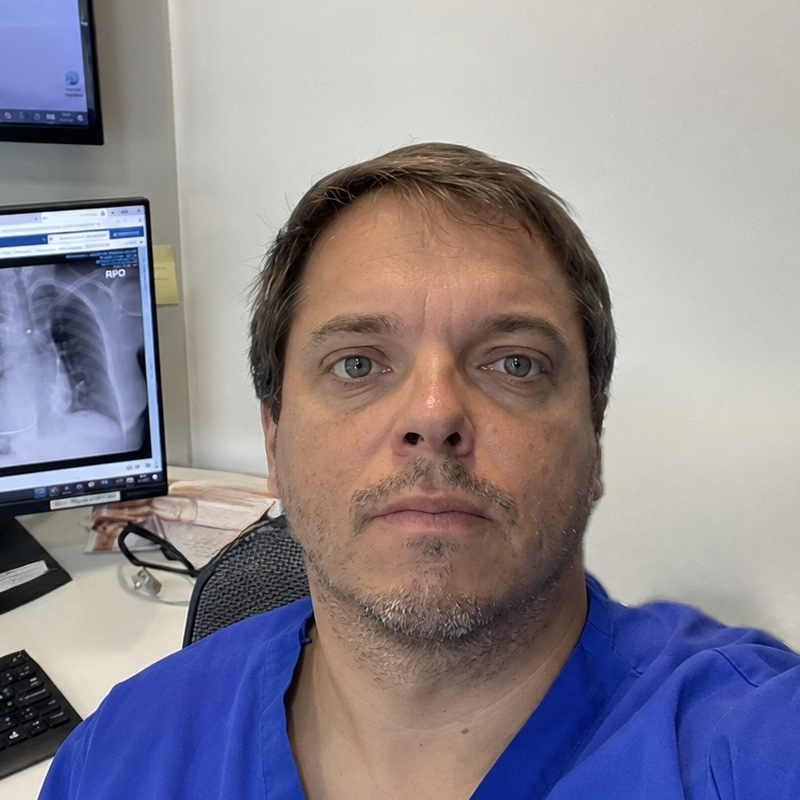

Cáncer Pulmonar
Diagnóstico, Etapificación y Tratamiento.

El cáncer pulmonar detectado en estadio temprano (I–II) tiene posibilidades de curación con cirugía. Sin embargo, más del 60% de los casos se diagnostican cuando ya está avanzado. Si eres fumador mayor de 50 años, pregunta a tu médico sobre el screening con TAC de baja dosis.
Explora por sección
Seis secciones para entender el cáncer pulmonar desde el principio hasta el tratamiento y la recuperación.
01 · Qué es
¿Qué es el cáncer pulmonar?
Qué ocurre en el pulmón, los diferentes tipos de cáncer (CPCNP y CPCP), y cómo se clasifica según el sistema TNM de la 9ª edición.
Leer más →02 · Causas y Riesgos
¿Cómo se produce y quién tiene más riesgo?
El tabaquismo es la causa principal, pero no la única. Conoce todos los factores de riesgo y quiénes deberían hacerse un screening preventivo.
Leer más →03 · Diagnóstico
¿Cómo se detecta y se estadifica?
Los síntomas de alerta, los exámenes que se realizan (TAC, PET-CT, broncoscopía, EBUS) y cómo se determina el estadio del cáncer.
Leer más →04 · Tratamiento
¿Cuáles son las opciones de tratamiento?
Cirugía mínimamente invasiva, quimioterapia, radioterapia, terapias dirigidas e inmunoterapia según el estadio y los marcadores moleculares.
Leer más →05 · Sobrevida
¿Cuáles son las posibilidades de recuperación?
Los datos de sobrevida por estadio según la 9ª edición de la clasificación TNM, y los factores que influyen en el pronóstico de cada paciente.
Leer más →06 · Etapificación
Clasificación TNM 9ª Edición — Detalle completo
Los descriptores T, N y M en detalle, los grupos de estadio, prefijos y procedimientos para determinar la extensión exacta de la enfermedad.
Leer más →
Especialista
Dr. David Lazo Pérez
Cirujano Torácico · Broncoscopía Intervencional
Cirujano torácico dedicado a la patología oncológica del tórax: etapificación mediastínica, resecciones pulmonares anatómicas y cirugía mínimamente invasiva del cáncer pulmonar. Miembro de la International Association for the Study of Lung Cancer (IASLC). Formado en la PUC de Chile y la Universidad de Chile, con fellowship en trasplante pulmonar en el Hospital Puerta de Hierro Majadahonda, España.
Con 19 años de experiencia, es el cirujano con mayor experiencia en EBUS en Chile (desde 2010, +3.200 procedimientos) y pionero en la técnica CryoEBUS a nivel latinoamericano. Regente para Chile de la Asociación Mundial de Broncología y Neumología Intervencionista (WABIP).
Formación, sociedades científicas y congresos fechados en el currículum académico.